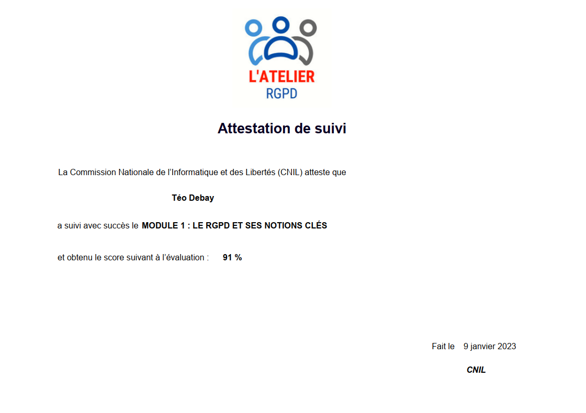
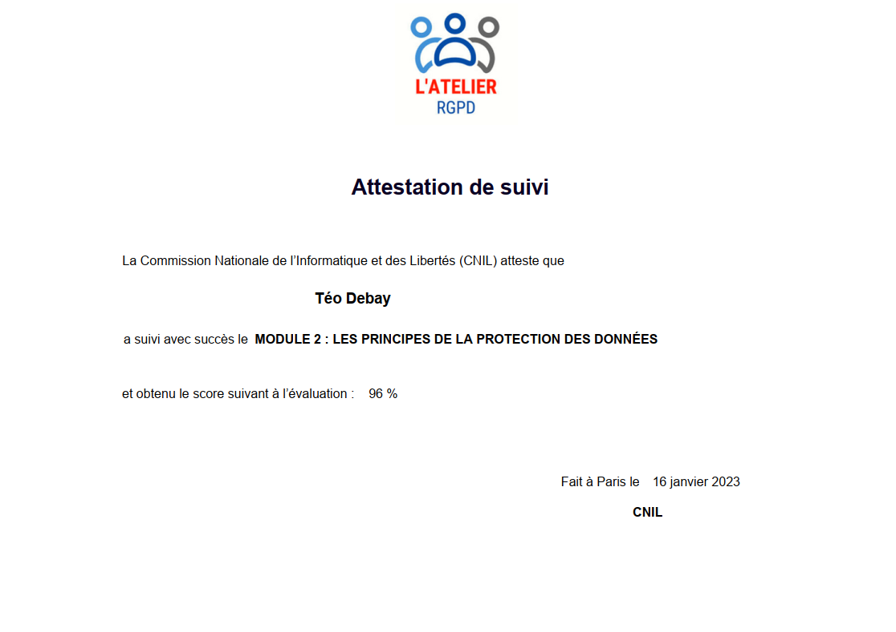
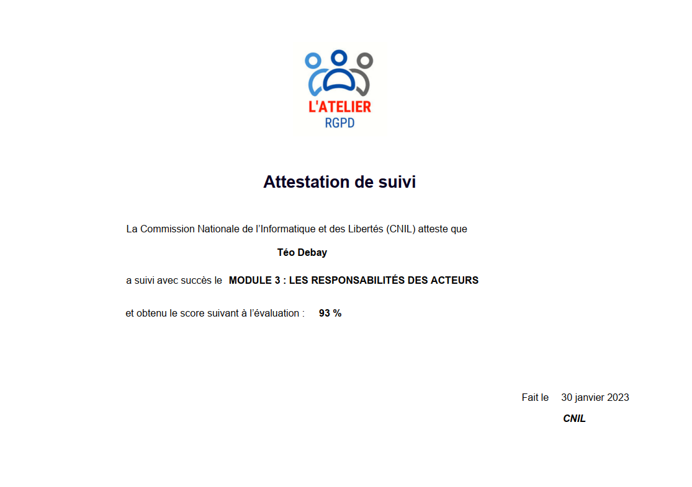
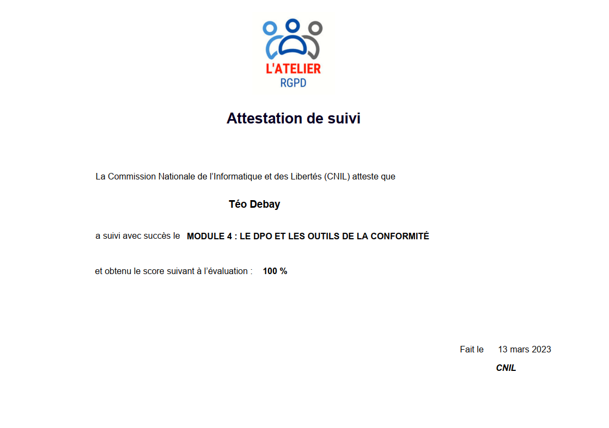
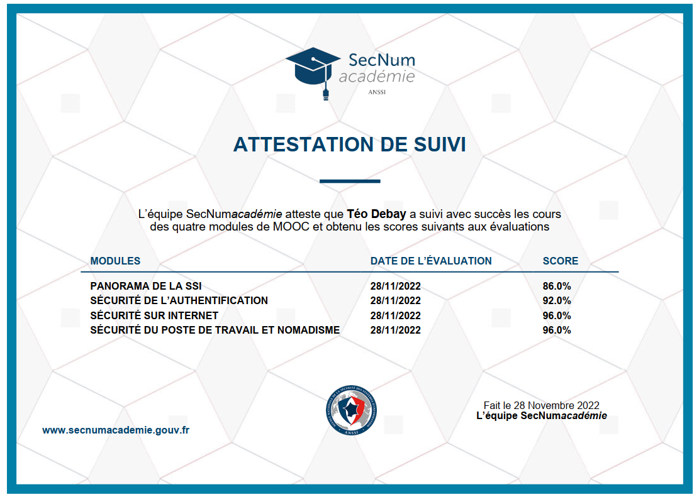

Voici quelques-uns des projets sur lesquels j'ai travaillé. N'hésitez pas à éxplorer :
Portfolio
Voici mon portfolio, mon théme est basé sur l'espace car cela est une de mes passion ! ⚡
<- ==================== ->
GSBExtranet PHP
C'est un site web que nous avons pu développer durant nos cours. Ce site permet un accès aux produits et à des visioconférences pour tous les médecins enregistrés sur la plateforme. Ce site permet aussi aux administrateurs de gérer le site et tout ce qui se trouve dessus.
<- ==================== ->
GSBExtranet Symphony
C'est un site web que nous avons pu développer durant nos cours. Ce site permet un accès au descriptif de l'entreprise ainsi que la possibilité de demander de l'aide via un formulaire, et offre un accès administrateur pour gérer les tickets et les utilisateurs.
<- ==================== ->
FireLovers (en cour de développement)
C'est un site web que je développe actuellement pour mon père afin d'afficher sa nouvelle société de vente de poêles à granulés sur Internet. Ce site a été réalisé à l'aide de PrestaShop et de l'AI !
<- ==================== ->
100 Jour, 100 Programmes
Un voyage exaltant de défi de 100 jours, 100 programmes, où j'explore divers langages et frameworks de programmation pour créer une collection diversifiée d'applications pratiques. 🚀
<- ==================== ->
A Propos de moi
Bonjour! Je m'appelle Teo Debay, je suis étudiant Web développeur basé en France. Avec une forte
passion pour le développement Web et doté d'un sens aigu des solutions créatives, je me spécialise dans la transformation des idées.
en solutions numériques entièrement fonctionnelles. Mon objectif est de fournir des résultats exceptionnels qui dépassent les attentes du client.
Parallèlement à mon expertise en développement Web, je possède également quelque base dans la conception 3D.
Je fusionne ces compétences techniques avec une vision artistique pour créer des designs visuellement époustouflants.
Je m'efforce de trouver l'équilibre parfait entre esthétique et fonctionnalité, garantissant que chaque projet laisse une impression durable.
N'hésitez pas à explorer mon portfolio sur mon site Web, où vous pourrez être témoin de la diversité des projets sur les quels
J'ai eu le privilège de travailler. Collaborons pour donner vie à vos idées grâce à un numérique remarquable et
des expériences qui se démarquent vraiment.
Compétences
Du développement Full Stack avec HTML, CSS, MySQL, PHP, JavaScript, Python, C#.
Utilisation d'applications / environnements de développement : VSCode, NetBeans, GitHub, Nuage Pédagogique.
Et même de la modelisation 3D sur blander, unity.
Conception web
Développement Web
Designer Web
Développeur Full Stack
Stage et BTS
Mes Stage
- Stage Premiére Année BTS SIO
Stage Chez BIDEV à Tourcoin, Durée 5 semaine.
Développement WordPress, création de site static, 2 site développé.
utilisation de différente extension : Divi/Elementor/SliderRevolut.
Lors de ce stage j'ai pus apprendre à utiliser trois extension de DEV sur WordPress, j'ai aussi pus avoir quelque relation client afin de repondre plus facilement au besoin des client,
j'ai fait de la maintenance web, et est effectuer des sauvegarde des site sur differentes sources (clé usb, divre, disque dur).
Les differentes extension de develeppement WordPress son vraiment utilise, mais j'ai préferer utilier Divi car il etait plus simple a prendre en main et trés complet,
grace a divi j'ai donc Dev 2 site web, qui sont les suivant :
Développement WordPress, création de site static, 2 site développé.
utilisation de différente extension : Divi / chromeNews
Se que j'ai fait durant mon stage :
- Lors de ce stage, j'ai pu apprendre à utiliser une nouvelle extension de développement sur WordPress.
- J'ai également pu établir des relations avec les clients afin de répondre plus aisément à leurs besoins.
- J'ai effectué de la maintenance web et réalisé des sauvegardes des sites grâce à un plugin de sécurité.
- J'ai aussi effectué une mise à niveau de la sécurité des sites grâce à un plugin nommé 'Solid Security'.
J'ai donc pu, grâce à mes compétences précédemment acquises sur WordPress et l'outil Divi, ainsi que le nouvel outil ChromeNews, créer deux sites qui sont les suivants :
J'ai effectuer des maintenance sur tout leur site afin de revoir la sécurité et les mise à jour :
BTS
Du développement Full Stack avec HTML, CSS, MySQL, PHP, JavaScript, Python, C#!
Utilisation d'applications / environnements de développement : VSCode, NetBeans, GitHub, Nuage Pédagogique. !
- Site GSBExtranet PHP / Symphony.
- CyberSécurité.
Compétences Aquise BTS + Stage
Développement Full Stack : html, css, javascript, python, mysql, PHP, C#
Dév WordPress : Plugin DIVI builder, Elementor, SliderRevolut, service client, maintenance !
Contact
Mes Info de contact
Nom : Debay
Prénom : Téo
Télèphone : 07-86-42-23-77
Email : contact.debay@gmail.com
Me Contacter facilement
Veille Informatique
Blog Veille Informatique
Microsoft injecte de l'IA dans ses dernières Surface pour entreprise
Microsoft a présenté la Surface Pro 10 et Laptop 6 à destination des entreprises. Outre l'arrivée d'un bouton dédié à Copilot, notre confrère de PC World constate un effort pour répondre aux besoins des professionnels.
Microsoft demande à nouveau aux utilisateurs de Chrome d'essayer Bing par le biais de fenêtres pop-up non blocables
Dans un élan pour promouvoir son moteur de recherche, Microsoft a récemment fait des vagues en incitant les utilisateurs de Chrome à essayer Bing à travers des pop-ups qui semblent inévitables. Cette tactique a suscité un débat sur les méthodes de marketing dans l’ère numérique et sur la frontière entre la promotion agressive et le respect de l’expérience utilisateur.
Après un piratage, l'Etat lance un audit de sécurité sur les ENT
Des menaces d'attentats ainsi qu'une vidéo terroriste d'une extrême violence ont été envoyées ce jeudi aux élèves, aux personnels et aux familles suite au piratage de l'environnement numérique de travail de la région Ile de France. Un audit sur la sécurisation des ENT a été évoqué par Gabriel Attal et confirmé par Nicole Belloubet.
Le passage à l'échelle de l'IA plus ardu que prévu
Avec la percée de ChatGPT, la plupart des entreprises ont établi une stratégie en matière d'IA, mais sa mise en oeuvre soulève encore bien des questions. En matière de préparation de la donnée, de compétences ou encore de maîtrise des enjeux sécuritaires.
Certification
CERTIFICATION RGPD
Module 1
Module 2
Module 3
Module 4
CERTIFICATION ANSSI
CERTIFICATION GOOGLE
Module 1
Module 2
Module 3
Module 4
Module 5
MODULE 1 : LE RGPD ET SES NOTIONS CLÉS

- Unité 1 : L'évolution de la protection des données personnelles
- Unité 2 : Traitement des données à caractère personnel
- Unité 3 : À qui s'applique le RGPD ?
MODULE 2 : LES PRINCIPES DE LA PROTECTION DES DONNÉES

- Unité 1 : Les 8 règles d'or
- Unité 2 : Finalité du traitement
- Unité 3 : Licéité du traitement
- Unité 4 : Minimisation des données
- Unité 5 : Protection particulière de certaines données
- Unité 6 : Conservation limitée des données
- Unité 7 : Obligation de sécurité
- Unité 8 : Transparence à l'égard des personnes concernées
- Unité 9 : Droits des personnes sur leurs données
- Unité 10 : Encadrement des transferts de données hors de l'UE
MODULE 3 : LES RESPONSABILITÉS DES ACTEURS

- Unité 1 : Nouvelle logique de responsabilisation : l'accountability
- Unité 2 : Partage des responsabilités
- Unité 3 : Responsabilité spécifique des sous-traitants
MODULE 4 : LE DPO ET LES OUTILS DE LA CONFORMITÉ

- Unité 1 : Le délégué à la protection des données
- Unité 2 : Le registre
- Unité 3 : L'analyse d'impact sur la vie privée
- Unité 4 : La notification des violations de données
- Unité 5 : Certification et codes de conduite
Certification de sécurité de premier niveau CSPN

La CSPN mise en place par l'ANSSI en 2008 consiste en des tests en « boîte noire » effectués en temps et délais contraints.
La CSPN est une alternative aux évaluations Critères Communs, dont le coût et la durée peuvent être un obstacle.
Cette certification s'appuie sur des critères, une méthodologie et un processus élaborés par l'ANSSI publiés sur le présent site.
MODULE 1 : Protégez votre entreprise en ligne
Un programme de formation créé par Google Ateliers Numériques en partenariat avec le dispositif national Cybermalveillance.gouv.fr et la Fédération du e-commerce et de la vente à distance (FEVAD),
pour aider les TPE-PME à se protéger contre les cyberattaques.
Au cours de cette formation, apprenez à identifier les principales menaces cyber et à vous en protéger grâce à des méthodes, des outils et des conseils pratiques et actionnables.
MODULE 2 : Analysez les besoins des utilisateurs et leurs comportements en ligne
Découvrez comment mesurer l'impact de votre marketing en ligne et obtenir de meilleurs résultats grâce à l'analyse d'audience Internet.
Il vous suffit d'avoir quelques compétences de base en matière d'analyse d'audience Internet pour mesurer facilement les performances de votre marketing en ligne et améliorer davantage vos résultats.
MODULE 3 : Renforcez la confiance en vous grâce à l'autopromotion
Découvrez comment améliorer votre confiance en vous et votre pouvoir de persuasion en parlant de vos réussites.
Apprenez à parler ouvertement de vos succès pour aider les autres à mieux cerner vos atouts et vos compétences.
Dans ces vidéos, nous allons vous parler de l'autopromotion et de ses difficultés.
Nous allons également vous donner des conseils pratiques pour vous aider à gagner en confiance et à vous sentir valorisé.
MODULE 4 : Décrochez un nouvel emploi
Découvrez comment rédiger un CV, préparer vos entretiens et décrocher votre prochain emploi.
Équipé des bons outils et des compétences adéquates, n'importe qui peut décrocher l'emploi de ses rêves.
Découvrez comment créer un CV et une lettre de motivation efficaces, développer votre présence en ligne, réussir votre entretien d'embauche, et mettre toutes les chances de votre côté pour décrocher votre prochain poste.
MODULE 5 : Apprenez les principes de base du code
Dans ce cours d'introduction, vous découvrirez le fonctionnement du code, les possibilités offertes par les différents langages et tous les avantages que vous pouvez en tirer.
Le code permet de faire fonctionner une grande variété de produits, des ordinateurs portables aux distributeurs automatiques, en passant par les voitures.
Mais quel est son principe ? Dans ces vidéos, vous allez découvrir en quoi consiste le code, pourquoi il existe tant de langages de programmation et comment ils sont combinés pour réaliser des tâches spécifiques.
Plus important encore, vous allez apprendre pourquoi l'apprentissage des bases du code pourrait vous être bénéfique.